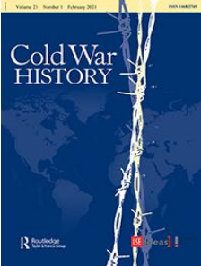
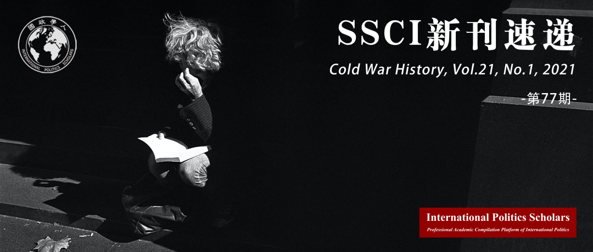

收录于合集 #新刊速递 123个


期刊简介

****Cold War History（冷战历史）是关于冷战时代及其起源、对区域和联盟的影响、军事、经济、社会和知识发展的期刊，2019年影响因子为0.612。
本期编委
【编译】 朱家羲、孟晓宇、阮含含、孙唯一、杨朔、张鸿儒
【校对】 池佳曈、朱忻博、石稚瑄、缪高意、孟晓宇、黎开朗
【审核】 朱文菡、丁伟航、阮镇炜、徐一君、晋玉、唐一鸣
【排版】 石寒冰
【美编】 方引弓

本期目录
1.“结束我们对独裁者的支持”：郭德华、乌拉圭和人权
‘Ending our support for the dictators’: Ed Koch, Uruguay, and human rights
2.柏林指挥官：马克斯韦尔·泰勒(Maxwell Taylor)在冷战前线，1949-51
Berlin commander: Maxwell Taylor at the Cold War’s frontlines, 1949–51
3.20世纪50年代美国对西班牙的军事援助：有限的现代化和战略依赖
The deployment of US military assistance to Spain in the 1950s: limited modernisation and strategic dependence
4.冷战结束时的奇怪结合：莱特利尔暗杀事件、人权和国家主权
Strange bedfellows at the end of the Cold War: the Letelier assassination, human rights, and state sovereignty
5.“无声的战斗”：重整潜艇军备和日本在冷战中军事介入的起源（1955-1976）
‘The silent fight’: submarine rearmament and the origins of Japan’s military engagement with the Cold War, 1955–76
6.安全帝国：共产主义东欧的秘密警察
Security empire: the secret police in communist Eastern Europe
01
“结束我们对独裁者的支持”： 郭德华、乌拉圭和人权
【题目】 ‘Ending our support for the dictators’: Ed Koch, Uruguay, and human rights
【作者】 Sarah Snyder，美利坚大学国际服务学院教授
【摘要】 1976年，美国国会人权运动兴盛，在国际特赦组织的推动下，美国众议员郭德华（Ed Koch）在与一位乌拉圭中间派流亡政治家交往的过程中受到启发，提出了一项修正案，其内容是终止美国政府对乌拉圭政府的军事援助。本文分析了一个以结束美国对乌拉圭政府的支持为目标的跨国组织的发展及其影响。该组织由一名流亡政治家和他的儿子、一名前传教士、一名年轻的学者、郭德华和他的国会盟友组成。这个松散的团体建立在早期人权活动家和国会议员之间成功的联盟基础上，他们通过切断美国政府对乌拉圭的安全援助取得了一场微弱但重要的人权胜利。本文表明，郭德华的努力是一场更广泛的跨国运动的一部分，目的是结束美国对乌拉圭独裁政府的支持，以及这些措施如何在美国政府抵制下得以实现。
Primed by Amnesty International’s reporting, inspired by interactions with a centrist exiled politician, and galvanised by a growing congressional human rights movement, in 1976 Representative Ed Koch introduced an amendment that ended military assistance to the Uruguayan government. This article analyses the development and influence of a transnational network motivated to end US support for the government in Montevideo. Made up, principally, of a political exile and his son, a former missionary, a young academic, Koch, and his congressional allies, they secured a narrow but significant human rights victory by cutting off security assistance to Uruguay. This loose group built on earlier successful alliances between human rights activists and members of Congress.
The article demonstrates that Koch’s efforts were part of a broader transnational campaign to end US support for the repressive Uruguayan government and how such a measure could be achieved despite executive branch resistance.
【编译】 朱家羲
【校对】 朱文菡
【审核】 池佳曈
02
柏林指挥官： 马克斯韦尔·泰勒(Maxwell Taylor)在冷战前线，1949-51
【题目】 Berlin commander: Maxwell Taylor at the Cold War’s frontlines, 1949–51
【作者】 Ingo Trauschweizer，当代历史研究所（Contemporary History Institute）所长、教授。他的研究重点是战略和政策、军事机构、军民关系以及战争在美国和欧洲历史和文化中的意义。
【摘要】 本文论述了在冷战的关键时期，即柏林封锁结束后和朝鲜战争爆发带来的动荡时期美国在柏林的战略。它考虑了陆军上将兼驻柏林美军司令马克斯韦尔·泰勒(Maxwell Taylor)在制定实地政策以及将军事、政治和经济资产联系起来，以努力改善柏林的经济和扩大长期冷战的威慑价值方面所发挥的作用。
This article addresses American strategy in Berlin at a critical juncture of the Cold War, right after the end of the Berlin blockade and through the upheaval brought on by the outbreak of the Korean War. It considers the role of Maxwell Taylor, army general and US commander in Berlin, in shaping policies on the ground and linking military, political, and economic assets in an effort to improve Berlin’s economy and deterrent value for an extended Cold War.
【编译】 孟晓宇
【校对】 丁伟航
【审核】 朱忻博
03
20世纪50年代美国对西班牙的军事援助: 有限的现代化和战略依赖
【题目】 The deployment of US military assistance to Spain in the 1950s: limited modernisation and strategic dependence
【作者】 Pablo León-Aguinaga（马德里孔普卢腾斯大学历史学博士）
Lorenzo Delgado Gómez-Escalonilla（西班牙国家研究委员会高级研究员）
【摘要】 本文聚焦于不平衡的1953年的《美西共同防卫援助协定》下美国对西班牙的军事援助。这一过程的特点是，双方目标不同，侧重于军事训练，以及西班牙武装部队在后勤和组织方面的缺点使其难以跟上美国的援助。1957年至1958年发生在非洲西北部的伊夫尼- 撒哈拉“去殖民化”冲突中，西班牙被迫寻求与法国进行军事合作，这使得美国军事援助的制约性和有限性的本质以及马德里在冷战期间增加其安全伙伴的需求变得明显。
This article looks at the initial implementation of US military assistance to Spain under the lopsided Mutual Defence Agreement of 1953. The process was characterised by the disparity in the objectives of both sides, the centrality of the military training programmes, and the logistical and organisational limitations of the Spanish Armed Forces to assimilate American aid. The Ifni- Sahara decolonisation conflict of 1957–58 in Northwest Africa, in which Spain was forced to seek French military cooperation, made apparent the conditioned and limited nature of US military assistance and Madrid’s need to diversify its security partners during the Cold War.
【编译】 阮含含
【校对】 石稚瑄
【审核】 阮镇炜
04
冷战结束时的奇怪结合：莱特利尔暗杀事件、人权和国家主权
【题目】 Strange bedfellows at the end of the Cold War: the Letelier assassination, human rights, and state sovereignty
【作者】 Alan McPherson，美国天普大学历史系教授、武力与外交研究中心主任。
【摘要】 基于部分最新公布的文件和采访，本文探寻了1976年智利的流亡者奥兰多·莱特利尔在华盛顿被暗杀一事所产生的影响。研究发现，这起案件通过将人权支持者和国家主权捍卫者出奇地结合在了一起，从而促成了拉丁美洲冷战的结束。人权支持者发现，美国外交的盟友对奥古斯托·皮诺切特政权认为自己可以挑战美国国家主权而不受惩罚的想法感到震惊。由于人权的潜力有限，本文认为，在苏联范围之外，美国对背离它的盟国重新确立霸权是结束冷战的必要条件。
Based in part on newly released documents and interviews, this article asks about the impact of the 1976 assassination of Chilean exile Orlando Letelier in Washington. It finds that the case contributed to the end of the Cold War in Latin America by uniting strange bedfellows: advocates of human rights and defenders of national sovereignty. Human rights proponents found allies among US diplomats shocked at an Augusto Pinochet regime that thought it could challenge US national sovereignty with impunity. Because human rights were limited in their potential, the article suggests that, outside of the Soviet sphere, a reassertion of US hegemony against runaway allies proved a necessary condition for ending the Cold War.
【编译】 孙唯一
【校对】 徐一君
【审核】 缪高意
05
“无声的战斗”：重整潜艇军备和日本在冷战中军事介入的起源（1955-1976）
【题目】 ‘The silent fight’: submarine rearmament and the origins of Japan’s military engagement with the Cold War, 1955–76
【作者】 Alessio Patalano ，日本天普大学当代亚洲研究所兼职研究员，日本海事指挥与参谋学院(IMCSC)客座教授，伦敦国王学院亚洲安全与战争研究小组（Asian Security and Warry Research Group）主任。
【摘要】 本文从两个方面考察了日本新的原始资料，以重新评估日本在冷战初期重整军备的意义。首先，本文说明了在潜艇发展领域，战后海军如何在美国海军的支持和专业指导下，将重整军备作为解决战时失败的机遇。其次，虽然潜艇被认为不在日本防卫的范围之内，但在如何将这一海战分支纳入国家战略方面，海军扮演着至关重要的角色，这对冷战后期产生了重大影响。
This paper examines new Japanese primary source materials to reassess the significance of Japanese rearmament during the early stages of the Cold War in two ways. First, the paper shows how, in the area of submarine development, the post-war navy approached rearmament as an opportunity to address wartime failures with the support and professional mentorship of the US Navy. Second, whilst submarines were considered as outside the scope of Japanese defence posture, the navy had a crucial agency role in shaping how this branch of naval warfare was integrated into the country’s strategy with significant consequences for the later stages of the Cold War.
【编译】 杨朔
【校对】 孟晓宇
【审核】 晋玉
06
安全帝国： 共产主义东欧的秘密警察
【题目】 Security empire: the secret police in communist Eastern Europe
【作者】 Mark Harrison，华威大学经济学荣誉教授，本文为其针对《安全帝国：共产主义东欧的秘密警察》一书撰写的书评。
【摘要】 《安全帝国：共产主义东欧的秘密警察》一书细述了1945-1954年间波兰、捷克斯洛伐克、东德三个共产主义国家秘密警察机构的起源和早期历史。在这一时期，上述三国均处于苏联势力范围之内，苏联对三国富有影响力的一个特征便表现在三国均将警察的秘密执法视为其统治的重要工具。但波兰、捷克斯洛伐克和东德在实现看似共同的目标的道路选择上却有着重大差异。因此，本书探讨的一个更大议题是：各国的共产主义统治在多大程度上是真正相同的。本书的证据基于上述三国档案的一手材料，以及大量的回忆录、出版物等二手材料。本书作者Molly Pucci现为都柏林圣三一大学助理教授，而本书是在其斯坦福大学博士学位论文的基础上完成的。
Security Empire recounts the origins and early histories of three communist secret police agencies. The book covers Poland, Czechoslovakia, and East Germany from 1945 through to 1954. In this period each country came under Soviet influence, but the routes by which they arrived at what seemed like the common destination differed greatly. One of the hallmarks of this influence was the great emphasis on secret policing as an instrument of rule. The wider issue that the book addresses, therefore, is the extent to which communist rule was truly the same everywhere. The evidence base is primary documentation from archives in all three countries as well as a rich array of memoirs and secondary publications. The author, Molly Pucci, now an assistant professor of history at Trinity College, Dublin, based the book on her Stanford PhD dissertation.
【编译】 张鸿儒
【校对】 唐一鸣
【审核】 黎开朗
好好学习，天天“在看”